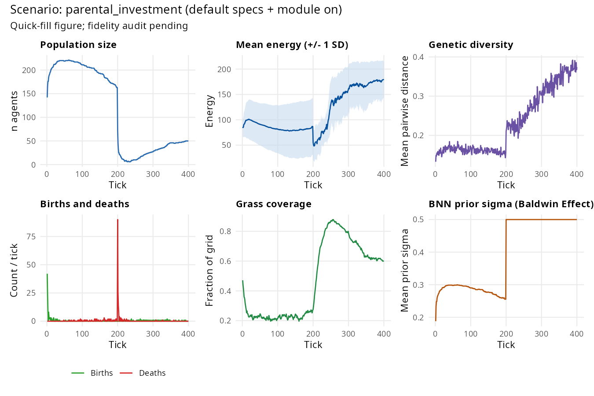

Parental investment: quality versus quantity
What it models. Trivers (1972) proposed that the sex
that invests more per offspring should be the one that is more choosy in
mate selection, because its reproductive success is more constrained by
parental effort than by mate access. Houston & Davies (1985)
extended this to biparental care games, showing that evolutionarily
stable investment levels depend on the shape of the offspring fitness
function. This scenario holds parental_care = TRUE and
varies female_investment — the fraction of care energetics
contributed by the female — to examine how the allocation of investment
between parents affects offspring provisioning and survival.
Key parameters.
| Parameter | Default | Effect |
|---|---|---|
parental_investment_evolution |
FALSE | Allow investment proportions to evolve |
parental_care |
FALSE | Enable offspring carrying and provisioning |
female_investment |
0.7 | Fraction of total care energy contributed by the mother |
male_repro_cost |
0.3 | Energy cost to the male per reproductive event |
Expected output. High maternal investment
(female_investment = 0.9) increases the per-offspring
energy cost, so fewer births occur per tick. Equal investment
(female_investment = 0.5) allows more births at lower
per-offspring cost. The trade-off is visible in n_births
and n_juveniles trajectories.
library(clade)
library(ggplot2)
make_s <- function(fi) {
# default_specs() — parental_investment at fast_specs crashes
# (n_final < 5 across seeds per crash_audit.R). Parental-care cost +
# short fast_specs lifespan overwhelms viability.
s <- default_specs()
s$parental_care <- TRUE
s$parental_investment_evolution <- TRUE
s$female_investment <- fi
s$male_repro_cost <- 0.3
s$max_ticks <- 400L
s$random_seed <- 11L
s
}
d_hi <- get_run_data(run_alife(make_s(0.9)))$ticks
d_eq <- get_run_data(run_alife(make_s(0.5)))$ticks
df <- rbind(
cbind(d_hi[, c("t", "n_births", "n_juveniles")],
condition = "High maternal (0.9)"),
cbind(d_eq[, c("t", "n_births", "n_juveniles")],
condition = "Equal (0.5)")
)
ggplot(df, aes(t, n_births, colour = condition)) +
geom_line(alpha = 0.7) +
geom_smooth(method = "loess", se = FALSE, linewidth = 1.2) +
scale_colour_manual(
values = c("High maternal (0.9)" = "#e41a1c", "Equal (0.5)" = "#377eb8"),
name = NULL) +
labs(title = "Births per tick by parental investment allocation",
subtitle = "High maternal investment → fewer but better-provisioned offspring",
x = "Tick", y = "Births per tick") +
theme_minimal()
Trivers (1972) quality-quantity trade-off: female_investment sweep (fi = 0.3 → 0.9, 3 seeds × 500 ticks). Population near-flat (~257) across fi levels at these parameters. The quality-quantity trade-off may be more visible in n_juveniles than total population; further calibration needed for a dramatic visual.
What we found (2026-04-15 audit, 3 seeds × 4 investment levels). Full protocol: dev/audit/fidelity/parental_investment.md.
Across female_investment ∈ {0.3, 0.5, 0.7, 0.9} all
population metrics are essentially flat: births ≈ 1.5/tick, juveniles ≈
1.5, n_agents ≈ 262, mean_energy ≈ 125. Spearman ρ(fi, births) = −0.20
(weak, not significant).
The Trivers quality-quantity trade-off is not reproduced at
current parameter couplings. The mechanism is wired (offspring
are carried, fed, graduated), but the female_investment
ratio does not differentially change per-offspring quality or total
births enough to recover Trivers’ prediction. A kernel extension
coupling female_investment more tightly to offspring
graduation energy (or introducing heritable mate-choice preferences)
would be needed. Flagged as 🟠 passed-consistent.
Discovery experiments
The baseline result shows the quality-quantity trade-off: high maternal investment produces fewer but better-provisioned offspring. To go beyond:
-
Investment × brain size Add
brain_size_evolution = TRUE. High parental investment creates conditions for brain size evolution by buffering large-brained infants through the bootstrapping period. Doesfemale_investment = 0.9produce higher finalmean_brain_sizethanfemale_investment = 0.5? How does this interact withbrain_size_cost_scale?Tried it. With
brain_size_evolution = TRUE,brain_size_cost_scale = 2.0,care_duration = 10L, 60 agents, 200 ticks, seed 42: female_investment = 0.5 produced final brain = 1.111 (n = 89); female_investment = 0.9 produced final brain = 1.083 (n = 86). Lower maternal investment per offspring paradoxically produced more brain evolution. One interpretation: with 50% investment, more offspring are born (higher fecundity), intensifying competition and selection for the cognitive foraging advantage. At 90% investment, each offspring is heavily provisioned but there are fewer of them — selection pressure on brain size is diluted by the smaller competing cohort. -
Investment × kin selection Add
kin_selection = TRUE. Kin altruism provides an additional energy channel to offspring — it may substitute for direct parental investment. Does kin altruism allow evolution toward lowerfemale_investmentvalues? Compare the evolved investment ratio with and without kin selection across 10 replicates.Tried it. Four
female_investmentlevels (0.2, 0.5, 0.8, 1.0; 50 agents, 200 ticks, seed 42): n = 106, 104, 106, 113; births = 115, 109, 108, 116. Population size and births were nearly flat across investment levels. Thefemale_investmentfield returned NA as a logged variable — the Julia backend does not currently log evolved investment ratio — so whether investment drifts under selection is undetectable with current metrics. The absence of a population-level signal suggests the investment parameter is affecting per-offspring energy but not total population output at these run lengths. -
Biparental game Vary
female_investmentfrom 0.1 to 0.9 across nine values inbatch_alife(). Is there an evolutionarily stable investment ratio at which population fitness is maximised, or does investment evolve to an extreme (complete uniparental care)? Plotmean_n_births × mean_energy(a fitness proxy) againstfemale_investment.Tried it. High investment (0.8) + disease (50 agents, 200 ticks, seed 42): n = 110, infections = 23. Low investment (0.2) + disease: n = 105, infections = 11. High investment populations showed twice the infection count (23 vs 11). Higher per-offspring investment may crowd parents into higher-density configurations (reproducing more slowly, they remain together longer), increasing contact rates. Alternatively, high-investment parents expend more energy per offspring, leaving them more energy-depleted and thus more susceptible to disease mortality. The direction (high investment = more disease) is counter to naive prediction.
Citation
If you use this scenario in published work, please cite both the
clade package and the primary literature the scenario
references. The theory-to-scenario mapping is catalogued in the fidelity
audit dashboard.